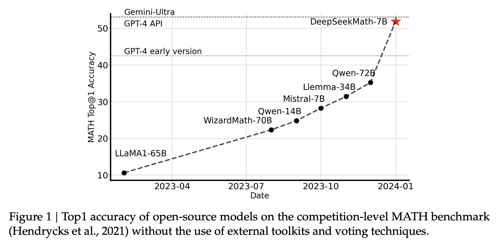
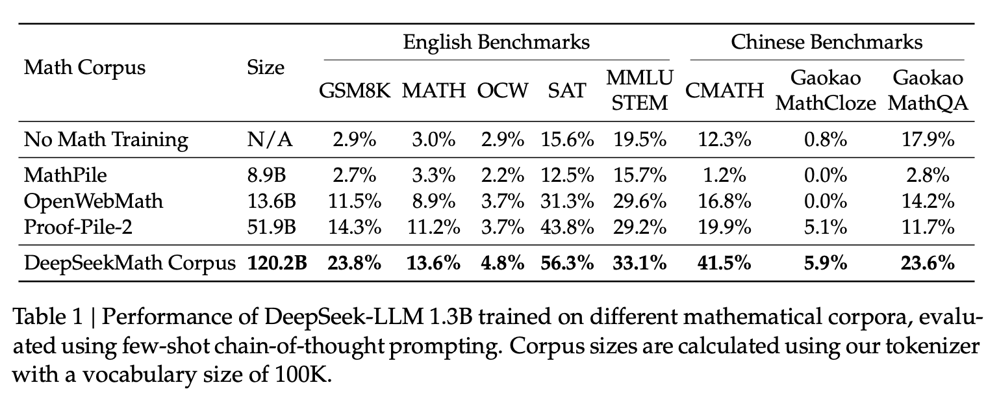
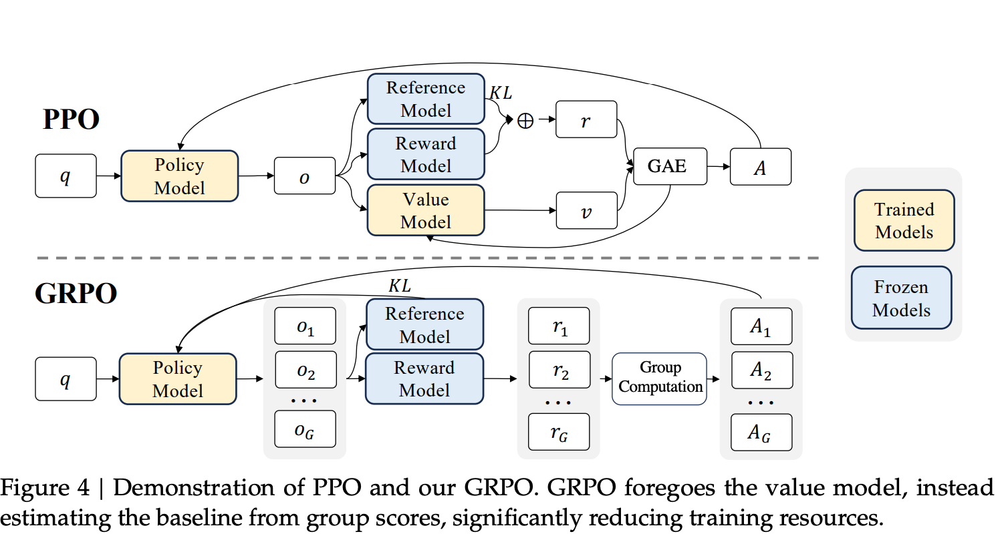
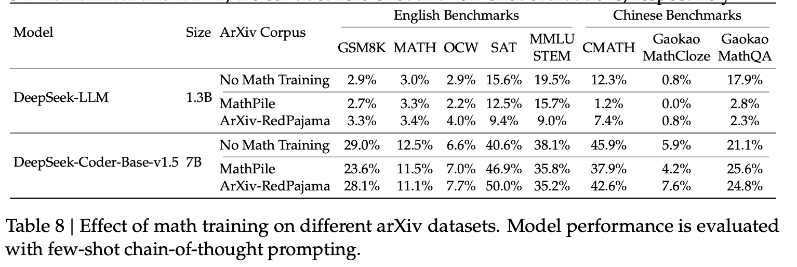
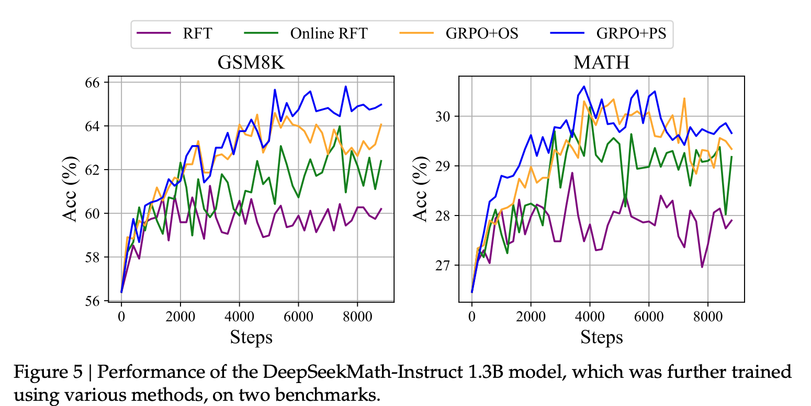
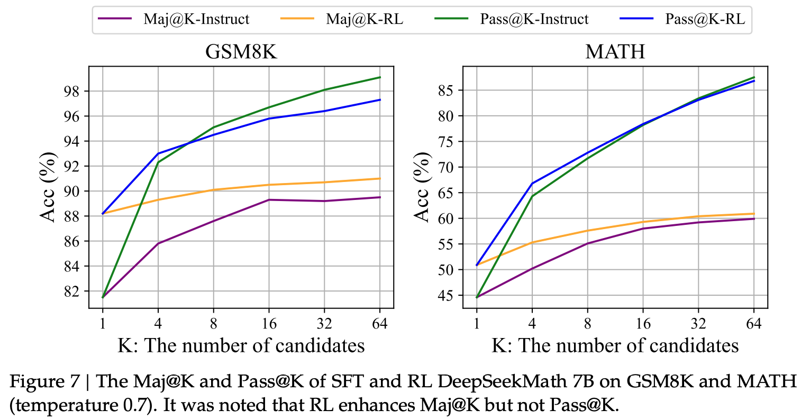
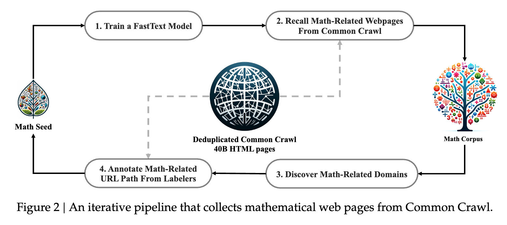

Key Insights from DeepSeekMath paper
Over the weekend, I finished reading the DeepSeekMath paper which introduced GRPO (the RL algorithm I covered in my previous post). Below are my thoughts and key takeaways from the paper.
In this paper, the authors show that a small domain-specific model (7B parameters) can approach the performance of SOTA general models like GPT-4 on competition-level math when it is pre-trained on a sufficiently large, well-curated math corpus (120B tokens) and then reinforced with RL. It outperform major open-source models available at that time including same or larger size math-specialized models like WizardMath-v1.1 7B, Llemma 34B and MetaMath 70B. As shown below, DeepseekMath-7B achieves 51.7% on the competition-level MATH benchmark.

In a nutshell: data quality and domain-specific pre-training are more critical for mathematical reasoning than sheer parameter count.
Key Insights
Iterative Data Curation Pipeline
One of the biggest contributors to DeepSeekMath-7B performance is its pre-training corpus which is a 120B-token, high-quality mathematical dataset built from Common Crawl using an iterative fastText classifier-based pipeline.
What stood out to me here is not just the dataset and data curation pipeline itself but what it implies:
Firstly, they created the pre-training corpus from the Common Crawl which shows that if you use a well-thought data curation pipeline you can extract a high-quality domain-specific data from the public Common Crawl data.
Secondly, the resulting corpus is substantially larger than OpenWebMath (roughly 9 times larger), reinforcing the point that scale matters, as long as quality is maintained.

Note, I will go deeper into the pipeline later in this post because I feel it is broadly reusable beyond math.
GRPO: PPO Without the Critic
The second major novelty is their more memory-efficient alternative to PPO: GRPO (Group Relative Policy Optimization).
At a high level, GRPO removes the need to train a separate critic (value) model. Instead of learning a value function for advantage estimation, GRPO samples a group of multiple completions per prompt (64 in their experiments) and uses the normalized average reward of the group as the baseline. This significantly reduces memory and compute overhead while preserving the stability mechanisms associated with PPO (clipping and KL regularization).

For a detailed explanation of GRPO, see my previous post on Understanding GRPO.
Code Training Helps Math
The paper also provides evidence for the hypothesized connection between code training and reasoning. In their results, models that underwent code pre-training before math training showed improved performance on mathematical benchmarks, both with and without tool use. Thus, DeepSeekMath-Base is initialized with DeepSeek-Coder-Base-v1.5 7B, not a general language model.
My understanding is code pushes the model toward more structured, step-wise patterns of reasoning and that structure transfers well to math.
ArXiv Papers are Surprisingly Ineffective
ArXiv papers are often a default ingredient in many math pre-training recipes, but the authors report that pre-training on arXiv content was not helpful in their setup. In some cases, it led to no improvement or even to worse performance.

Note, the authors have been cautious claiming it to be definitely true and rather presented it as an empirical finding that requires more studies to confirm it.
Still, I found this interesting. It suggests arXiv-style technical writing might be more useful for formal exposition (or informalization) than for improving competition-style problem solving.
Online RL Training is Superior to Offline
Sampling training data from the real-time policy model (online) significantly outperforms sampling from the initial SFT model (offline).
In their experiments, Online Rejection Sampling Fine-Tuning (RFT) significantly outperformed standard (offline) RFT on both GSM8K and MATH benchmarks. While the two methods perform similarly in the early stages of training, Online RFT gains a distinct advantage as training progresses.

As the policy diverges from the initial SFT model, data sampled from SFT becomes less relevant to the current model’s decision boundaries. Early on when the policy is close to SFT, it doesn’t matter much. Later, this staleness hurts the performance.
RL Sharpens Distribution, Does not Expand Model Capability
This is one of my favorite analyses in the paper. The authors compare Maj@K (majority voting accuracy) and Pass@K (whether any of K samples is correct) for both the Instruct and RL models.
At K=64 samples, both models reach similar Pass@K ceilings (around 83-85% on MATH) which indicates that the fundamental capability is the same. However, RL consistently outperforms on Maj@K.

This suggests RL isn’t expanding fundamental reasoning abilities. Instead it is sharpening the distribution of the model’s output which boosts the correct responses that were already within the model’s capability.
The Iterative Data Curation Pipeline
As I mentioned earlier, one of the key contributions of this paper is their data curation pipeline that extracts high-quality mathematical content from Common Crawl.
The reason I am going into detail here is that you can draw parallels from this approach to create any other domain-specific dataset from publicly available data like Common Crawl. The pipeline is iterative and uses a fastText classifier at its core. Crudely, this is how the pipeline works:

1) Train a fastText Classifier
They start with OpenWebMath as a seed corpus (high-quality math web text). Using this seed, they build a binary classification dataset:
- Sample ~500K examples from the seed corpus as positive examples
- Sample ~500K random web pages from Common Crawl as negative examples
- Train a fastText binary classifier on this labeled data
4) Expand the Seed Corpus and Repeat
Finally, these new math related web pages are added to the seed corpus and the fastText classifier is retrained. This process is repeated until some sort of convergence is reached.
This approach enables training an improved classifier with each iteration leading to better recall of math-related web pages in each subsequent iteration.
According to the paper, the pipeline converges after 4 iterations with 98% of the data already collected in the third round.
Conclusion
DeepSeekMath is worth reading for a few reasons.
- First, it shows that a well-curated dataset matters more than model size for math reasoning.
- Second, the data curation pipeline is explained in enough detail that you can adapt it for other domains.
- And thirdly, the discussed ablation studies and experiments are genuinely useful.